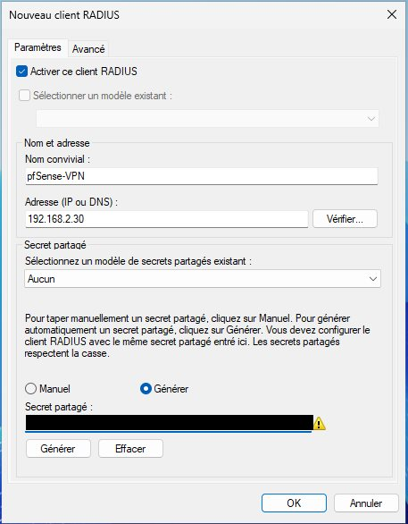
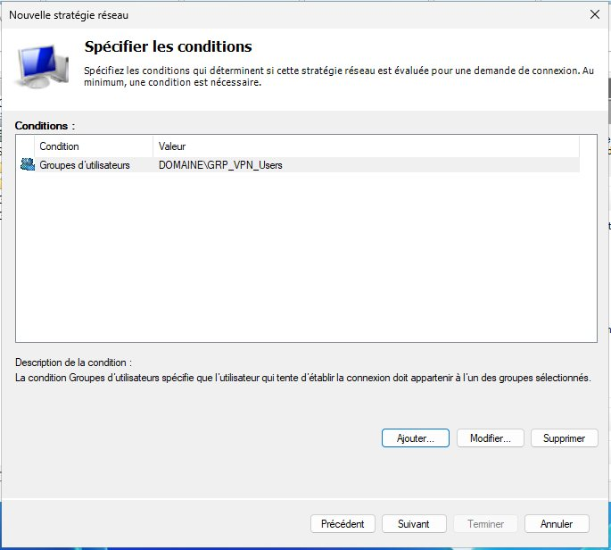
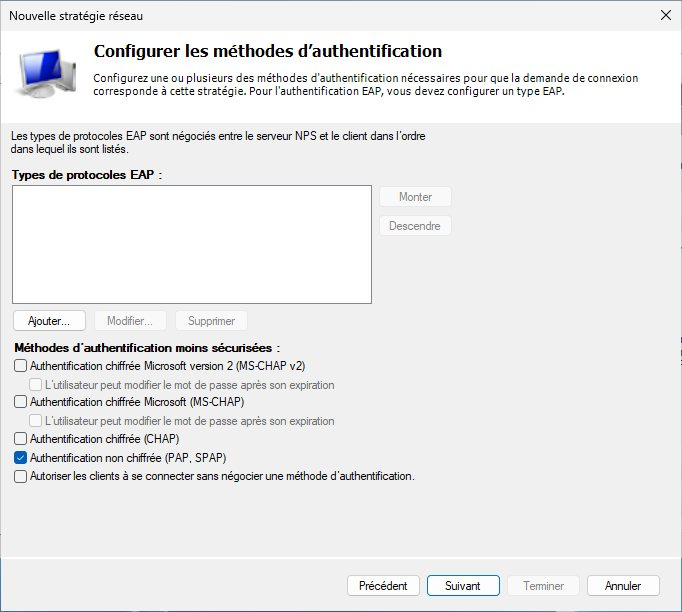

Étape 2 sur 5
Client RADIUS et stratégie réseau
Déclarer pfSense comme client RADIUS puis limiter l'accès au groupe VPN.
1. Déclarer pfSense comme client RADIUS
| Paramètre | Valeur |
|---|---|
| Nom convivial | pfSense-VPN |
| Adresse IP | Adresse du pfSense côté LAN |
| Secret partagé | Mot de passe fort, identique côté pfSense |
2. Stratégie réseau d'accès
- Stratégies réseau, Nouveau : nom « Autoriser_Acces_VPN ».
- Condition : appartenance au groupe GRP_VPN_Users.
- Autorisation d'accès : « Accorder l'accès ».
- Méthodes d'authentification : MS-CHAP décoché, authentification non cryptée (PAP) cochée.
- Autres options laissées par défaut.
Point d'attention
Le mot de passe circule en PAP entre pfSense et le serveur NPS : ce flux reste interne au réseau et est protégé par le secret partagé. Dans un déploiement réel, il faudrait le cantonner à un segment de confiance.
Captures



Savoir-faire mobilisés
- RADIUS
- Stratégies réseau
- Contrôle d'accès